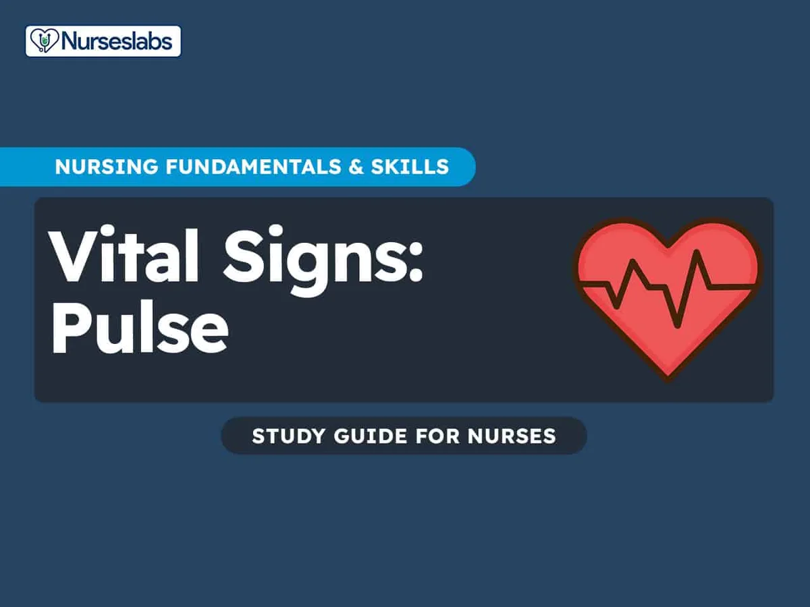

Expanded Nursing Uganda Explanation
TPR, BP, Pulse, Respiration should be understood beyond a short definition. Link the concept to patient history, focused assessment, common risks, nursing priorities, documentation and evaluation of outcomes.
Contents — 19 sections (tap to expand)
01 Topic: Take vital observations (PEX 1.5.1 - 1.5.4)
Vital signs are measurements of the body's most basic functions. They should be looked at in total, to monitor the vital functions of the body. They help reflect changes in the body and determine the patient’s usual state of health.
There are four primary vital signs: body temperature, blood pressure, pulse (heart rate), and breathing rate (respiratory rate) , often noted as BT, BP, HR, and RR .
02 Purpose of Taking Vital Observations
- To assess the health status of an individual.
- To plan and implement the nursing care.
- To modify or change the mode of treatment .
- Routine part of complete physical assessment.
- It helps to understand the present problem ; assists in diagnosis
- To understand the effectiveness of the treatment .
03 Timing of Taking Vital Observations
- On the patient’s admission to the hospital or health unit.
- On routine schedule according to the physician’s order or hospital policy e.g. 6:00am to 6:00pm.
- During patient’s visit to the clinic or physician’s office .
- Before and after any invasive diagnostic procedure .
- Before and after a surgical procedure e.g. 1 st 48hrs postoperatively or 4hrly with very ill patients or with fever.
- Before and after administration of medication that affects the cardio vascular, respiratory and temperature control function .
- When the patient’s general physical condition changes e.g. loss of consciousness, increase in intensity of pain.
- Before and after nursing interventions influencing anyone of the vital signs e.g. before ambulating a patient who has been previously on bed rest or before the patient performs range of motion exercise, blood transfusion and tepid sponging.
- Whenever the patient reports to the nurse about any non specific symptoms of physical distress e.g. “feeling funny or different”
04 Normal Values and Ranges of Vital Signs
Temperature:
- Normal value: - 98.4°F or 37°C in adults.
- Normal ranges: - 97°F-99°F or 36°C-37.2°C .
Pulse:
- Normal value: - 72 b/m in adults
- Normal ranges: - Adult: 60-90 b/m (18yrs +)
- Children: 90-120 b/m (1-18yrs)
- Infants: 120-140 b/m (1 month-1yr)
- Neonate (newborn): 140-160 b/m (0-28ays-1month)
- Old age - may be slower
- Extremely old age - may be more rapid
Respiration:
- Normal value: 16 breaths/minute (adults)
- Normal range: 16-20 breaths/minute (adults)
- 30-44 breaths/minute (neonates)
- 20-22 breaths/minute (children)
- Old age - 10 to 24 breaths per minute.
Blood pressure:
- Normal value: 120/80 mmhg (in adults)
- Normal range: 90/60 - 120/90 mmhg .
- Newborn (neonates): - 30-50 / 10 mmhg
- Infants: - 70-90 / 50 mmhg
- Adult: - 90-120 / 60-90 mmhg (Note: This is the same as the general adult range, but listed again here).
05 Guidelines for Taking Vital Signs
- The primary nurse caring for the patient is the best one to take vital signs , interpret their significance and make decisions about the care.
- Equipment used to measure vital signs must be appropriate and working properly to ensure accurate findings.
- Knowing the normal range for all vital signs helps the nurse to detect abnormalities.
- A client’s normal range may differ from the standard range for that age or physical state.
- A normal value for the client serve as a baseline for comparing in conditions over time.
- Know the client’s medical history and therapies or medications , for vital sign changes.
- Control or minimize environmental factors that may affect vital signs. For example measuring pulse after the patient experiencing pulse upset, will give unclear results for the client’s current state.
- An organized, systemic approach when taking vital signs ensure accuracy of findings.
06 Take Patient's Temperature (PEX 1.5.1)
Temperature Is the degree of heat maintained by the body monitored/measured using a clinical thermometer. Or Is the degree of warmth or balance maintained between the heat produced (thermogenesis) and heat lost (thermolysis) in the body. Or Is the degree of heat of substance or body as measured by a thermometer.
Purpose:
- To determine the body temperature
- To assist in diagnosis
- To evaluate the patient’s recovery from illness.
- To plan immediate nursing interventions .
- To evaluate the patient’s response .
- To recognize any variation from the normal and its significance.
Normal body temperature from different sites (adult):
- Oral: 37°C or 98.4°F (36°C-37°C)
- Rectal: 37.6°C or 99.6°F or 1° higher than mouth temperature.
- Axilla: 36.4°C or 97.6°F (36°C-37°C or 1° lower than mouth temperature.)
- Groin: as for the axilla.
N.B:
- Temperature varies at different times of the day , the evening temperature being about 1° (one degree) higher than that of the morning because of muscular and metabolic activity.
- The temperature also varies according to the site used for taking it. E.g. the skin temperature i.e. axilla in a healthy person may be 36.1°C while the oral/mouth temperature is usually a degree higher and the rectal temperature may be 37.2°C or 99°F. The rectal temperature is the most accurate temperature.
- When taking temperature, never be satisfied with anything but accurate result. Incorrect results do mislead diagnosis, prescription and treatment.
Factors that affect temperature:
- Times of the day e.g. morning, evening.
- Site used.
- Gender, women normally have a higher temperature than men especially during ovulation.
- Age, the temperature is highest in neonates and lowest in the elderly.
- Emotional conditions.
- Environment.
N.B: The mouth, axilla, groin, rectum and vagina are suitable places in taking temperature but as the reading varies according to the site, the same place must be used each time for the same patient.
Factors that influence heat production:
- Metabolism, oxidation of food.
- Muscle activity, exercise
- Strong emotions, excitement, anxiety and nervousness.
- Change in atmospheric temperature.
- Diseases/conditions; bacterial invasions or infections.
- Sympathetic stimulation; epinephrine and nor-epinephrine.
Factors that influence heat loss:
- Sleep; body temperature is low
- Fasting; leads to decreased heat production
- Illness and lower vitality; due to depressed nervous system, the heat production is lowered.
- Prolonged exposure to cold
- Use of narcotic drugs; suppress the temperature centre.
The body heat is lost through the following;
- Conduction - Transfer of heat from body to substance (air, water and cloths) directly in contact.
- Radiation - Transfer of heat from the body to heat waves which travel through the space.
- Evaporation -Transfer of heat from the body in form of vapor (liquid is converted into vapor)
- Convection -It is transfer of heat from the surface of one subject to the surface of the other; such as skin by movement of heated air or fluid particles.
General rules for taking temperature:
- The mouth is the usual place to take temperature but it must not be used for the following; A child under 5 years
- If there is difficulty in breathing or much coughing
- Unconscious or mentally confused patients.
- If there is disease of the mouth or nose.
- It should not be taken immediately after hot or cold fluids, because the factors affect the temperature recorded on the thermometer.
- Wait for 10 minutes after the patient has eaten or drunk.
- Grasp the thermometer securely by the upper end of the stem; never hold it by the bulb as it will easily be broken or contaminated.
- If the patient bites or breaks a thermometer in the mouth, quickly give cold water to rinse and inform the in charge for further management.
- If taking temperature by rectum, always hold the thermometer for the patient in place (children)
- Report to the supervisor the temperature below 35°C or above 38°C
- Always wash the used thermometer with cold water and soap or disinfect with a disinfectant.
- Never take oral and rectal temperature at the same time.
- Shake it by quick movement of the wrist below 35°C or 94°F.
- Care should be taken when shaking the thermometer near an object or articles to avoid breakages.
- Patients are never told what the vital sign reading is but simply explain to the patient i.e. “you are fine, okay, don’t worry.”
Types of thermometer:
- Clinical thermometer: It is an instrument used for recording body temperature. It is made of glass with a hollow tube running through the centre. At one end is bulb containing mercury which rises into the center tube when heated. The mercury remains stationary at registration point until shaken down due to a constriction in the tube which prevents this. Degrees of temperature are marked on the clinical thermometer from 35°C-43°C or 94°F-110°F.
- Electronic or digital thermometer: It consists of battery powered display unit, a thin wire cord and a temperature sensitive probe covered by a disposal plastic sheath to prevent transmission of infection. Separate probe are available for oral and rectal insertion.
- Disposable thermometer: It is a single use thermometer, made of thin plastic strips with chemically impregnated paper, they are used for children to take oral and axillary temperature only. 45 seconds are needed to record the temperature, it is less accurate.
- Tympanic membrane thermometer: These are small held devices similar to hodoscopes with disposable speculum. Infrared-sensing electronic and liquid crystal displays. Results are displayed 1-2 seconds after placing their speculum in the outer third of the ear canal, it is accurate.
07 Oral Temperature
Temperature checked by the oral cavity.
Requirement: Temperature tray containing the following;
- Oral clinical thermometer in a jar containing a disinfectant solution e.g. hibitane cetrimide 1-20.
- Galipot of swabs
- Galipot of water
- A receiver for used swabs
- Watch with second hand ticker
- Temperature chart
- A pen
Procedure:
- Collect the equipment needed.
- Explain the procedure to the patient.
- Position the patient and give privacy.
- Wash hands.
- Hold the colour coded end or system glass thermometer with finger tips.
- If the thermometer is stored in disinfectant solution, rinse in cold plain water and dry before use. Inspect for cracks and if broken do not use.
- Read mercury level while holding thermometer horizontally and gently rotating at the eye level. If the mercury is above a desired level, grasp at the tip of thermometer securely and sharply flick the wrist downward, continue shaking until reading is below 35°C or 94°F.
- Ask the patient/client to open the mouth and gently place the thermometer under the tongue in posterior sublingual, lateral to center of the lower jaw.
- Ask the patient to hold thermometer with lips closed. Caution against biting the thermometer and talking whilst the thermometer is in place.
- Leave the thermometer for 3 minutes in place or according to agency policy. Carefully remove the thermometer, read at eye level while holding horizontally.
- Wipe the thermometer in rotating movements with a wet swab, place it back in its jar and chart the readings and report any unusual variations to the in charge nurse.
- Clear away, make the patient comfortable and wash hands.
N.B:
- If the ward temperatures are taken orally, individual thermometers should be used.
- When taking the temperature the patient should be sitting or lying down.
Contraindications (Oral Temperature):
- Disease, injuries, inflammation and surgeries of the oral cavity.
- Infants, children below 5 years, mentally disturbed patients; delirious, no-cooperative and unconscious- cannot retain the thermometer in place.
- Patients with breathing problem/difficulty in breathing, convulsions, patients with oxygen masks, frequent and severe cough.
- Should not be taken immediately after hot bath, after smoking, taking hot or cold drinks - because these factors affect the temperature recorded on the thermometer.
08 Axillary Temperature
The temperature is sometimes taken by axilla when it cannot be taken by mouth or contra indicated to oral temperature.
Requirements: As for oral temperature.
Procedure:
- Collect the equipment needed for the procedure.
- Explain the procedure to the patient.
- Position the patient and provide privacy.
- Wash hands.
- Inspect the axilla and dry it thoroughly with a dry swab.
- The thermometer is dried on swabs and shaken with a flick of wrist until the mercury falls below 35°C or 94°F mark. Inspect for cracks.
- Insert the thermometer into the center of the axilla with the bulb in contact with the skin folds, care should be taken in that clothing should not interfere. The elbow is kept at the side and place arm across client’s/patient’s chest to retain the thermometer in position.
- Leave the thermometer in place for 3 min.
- Remove the thermometer from the axilla, read it at the eye level. Wipe the thermometer using a swab soaked is a disinfectant or plain water from stem to bulb using a firm twisting motion. Place it back in its jar and chart the findings and report any variations to the in charge nurse.
- Clear away, make the patient comfortable and wash hands
Contraindications (Axillary Temperature):
- If there are sores or burns at the site
- Emaciated or thin patients
NB. The patient should be in sitting or lying position.
09 Groin Temperature
The rules apply as for the axilla, but one leg is flexed over the other.
Requirements: As for the oral temperature.
Procedure:
- Collect the equipment needed for the procedure.
- Explain the procedure to the patient.
- Position the patient and provide privacy.
- Wash hands.
- Inspect the groin and dry it thoroughly with a dry swab.
- The thermometer is dried on a swab and shaken with a flick of the wrist until the mercury falls below 35°C or 94°F mark. Inspect for cracks.
- Insert the thermometer in the center of the groin by asking the patient to abduct the thigh and flex the upper leg over the other.
- Leave the thermometer for 3 minutes.
- Grasp the end of the thermometer and remove it from the groin, read it at the eye level.
- Wipe the thermometer using a swab soaked in a disinfectant or plain water from the stem to bulb using affirm twisting motion.
- Place it back in its jar and chart the findings and report any variations to the nurse in-charge.
- Clear away, make the patient comfortable and wash hands.
Contraindications (Groin Temperature):
- Sores or burns at the site.
- Emaciated or thin patients.
10 Rectal Temperature
Rectal temperature measurement is a technique used to measure body temperature by placing a thermometer in the rectum.
This method is used for head injuries, head operations and for children under 5 years. The rectum thermometer has a blunt end colored blue, to prevent inadvertent use in other situations. The thermometer must be kept in a jar containing a disinfectant solution.
Requirements:
- Rectal thermometer
- Galipot of swabs
- Galipot of water (2); Lukewarm and cool water
- Receiver for used swabs.
- A watch with a second hand ticker
- Temperature chart
- A pen
- Vasciline or other lubricant
- Gloves
Procedure:
- Collect all the equipment needed.
- Explain the procedure to the patient.
- Screen the bed to provide privacy.
- Position the patient in sim’s position with the upper leg flexed to expose only the anal area.
- Wash hands and put on gloves.
- Swab the area.
- Remove the thermometer from the jar, clean it/dry it, check for cracks and shake below 35°C.
- Squeeze liberal portion of a lubricant on a swab and dip the thermometer’s bulb end into the lubricant covering 2.5-3.5 cm (1-1.5 inches) for adult or 1.2-2.5cm (0.5-1 inch) for infant.
- With a non-dominant hand, separate the patient’s buttocks to expose the anus and ask the patient to breathe in slowly and relax.
- Gently insert the thermometer into anus along the rectal wall towards the umbilicus so as to register the hemorrhoid artery temperature instead of the faecal temperature. Insert it about 1.2-2.5cm for infants and 2.5-3.5 for adults. Do not force the thermometer to prevent perforation of anus or rectum and breakage of the thermometer.
- If resistance is felt during insertion withdraw the thermometer immediately and report.
- Hold or leave the thermometer in place for 3 minutes.
- Carefully remove the thermometer and wipe off secretions with a swab, wiping in rotating movements towards the bulb.
- Read the thermometer at eye level and chart the findings in the patient’s chart.
- Wash the thermometer in Lukewarm water or disinfectant, rinse in cool water, dry and replace it in its container or jar.
- Clear away, remove the gloves and wash hands.
- Report any unusual variations to the nurse in-charge
Contraindications (Rectal Temperature):
- Injuries, disease, inflammation and surgeries of the rectum
- Patients with faecal impaction
- Patients with chronic diarrhea
- Patients requiring bowel wash/enema.
11 Conversions (Temperature)
The Fahrenheit scale ranges from 32°F to 212°F whereas centigrade scale ranges from 0°C to 100°C.
- When converting Fahrenheit to centigrade, the formula is **(F-32) * 5/9 = C**
- And in converting centigrade to Fahrenheit, the formula is **(C * 9/5) + 32 = F** .
12 Rigors
Is a sudden attack of intense shivering when the heat regulating center in the brain is disturbed. It is seen in certain infections like malaria, allergic reactions i.e. after intravenous infusion.
Stages of rigors:
Cold stage: The patient feels chill, extreme shivering and hyperpyrexia.
Management:
- Provide rest and supplementary oxygen.
- Offer hot drinks and use hot water bottle to provide warmth.
- Provide with an extra blanket.
- Give more fluids to take.
Hot stage: The patient feels extremely hot.
Management:
- Remove extra blankets and hot water bottles.
- Cold sponge/tepid sponge and give ice pack compresses.
Sweating stage: Here the patient is sweating profusely.
Management:
- Wipe the patient with a wet towel and cover with a sheet.
N.B: During all the three stages, take temperature and record in the patient’s chart.
13 Take Patient's Pulse Rate (PEX 1.5.3)
PULSE Is the wave of expansion and recoil of an artery in response to the pumping action of the heart. This can be felt by the examining fingers.
Purpose:
- To determine the number of heartbeats acquiring per minutes created.
- To evaluate amplitude (strength) of the pulse.
- To assess the vascular status of the limbs.
- To assess the response of the heart to cardiac medication, activity, blood volume and gas exchange.
- To assess the heart’s ability to deliver blood to distant areas of the body.
- To obtain information about the heart rhythm and patterns of beats.
Normal pulse rates:
- Newborn - 140 b/m
- Infant - 120 b/m
- 2-3 years - 100 b/m
- 4-10 years - 90 b/m
- 11 years and above - 70-80 b/m (average - 72 b/m)
- Old age - may be slower
- Extremely old age - may be more rapid
Normal ranges of pulse rate:
- Neonate (newborn) - 140 to 160 b/m (0-1 month)
- Infant - 120 to 140 b/m (28 days/1 month - 1 year)
- Children - 90 to 120 b/m (1 year - 18 years)
- Adults - 60 to -90 b/m (18 years and above)
Common Sites of Taking Pulse:
- Site Location
- Radial artery In front of the wrist at the thumb side.
- Brachial artery Medially above the elbow.
- Carotid artery At the side of the neck where the carotid artery runs between the trachea.
- Temporal artery Over the temporal bone.
- Facial artery Above the lower jaw.
- Femoral artery In the groin.
- Tibial artery Behind the medial malleolus.
- Dorsal pedis On the foot.
- Apical At the left side of the chest in the 4 th 5 th and 6 th intercostals’ space.
- Popliteal Medial or lateral to the popliteal fossa with the knees flexed.
- Ulnar pulse Outer aspect of the wrist along the little finger side.
- Fontanelles of infants Head.
Observations made on taking pulse:
When taking the pulse the following should be noted;
- Rate: Is the number of beats per minute. Corresponds with the age, average for adults is 72 b/m.
- Rhythm: It is the regularity of beats. The distance between beats is equally spaced (regular)
- Volume: It is the fullness of an artery. It is the force of blood felt at each beat (full/large/small/weak). Amount of blood distending the artery with each beat.
- Tension: It is the degree of compressibility (high/low). The pulse should be felt soft under the nurse’s fingers, it should not feel hard. If it is difficult to compress or stop the tension, it is high and if it is easy to compress or stop, then it is low.
Factors that affect the pulse:
- Age - children have faster beats and very old persons have a slow pulse rate.
- Sex - it is slower in men than women.
- Stature - It is slower in tall people than in short people.
- Position - The pulse rate is slower at rest and sleep than in a standing position.
- Emotions - Anger or excitement increases the pulse rate temporarily.
- Exercise - It is much faster during exercise.
- Fever increases the pulse
- Extreme heat and cold - increase
- Drugs - may increase the pulse rate e.g. morphine, digitalis.
- Shock and hemorrhage (cerebral vascular accident)
- Diseases e.g. thyrotoxicosis, myocardial failure (increase)
- Fasting (increases)
- Head tumors (increase)
Abnormal pulse:
- Tachycardia: Is the rapid heart action indicated by a rapid pulse rate. The pulse rate is more than 100 b/m . It is commonly found in patients with fevers, thyrotoxicosis, organic heart disease, nervous disorders and intake drugs like morphine, caffeine and alcohol.
- Bradycardia: It is an abnormally slow heart rate indicated by a slow pulse rate of less than 60 b/m . Commonly caused by opium poisoning heart muscle disorder, cerebral tumors and myxedema.
- Dicrotic pulse (abnormal volume): There is a one heartbeat and two arterial pulsations giving the sensation of a double beat due to flabby weak arterial pulse.
- Abnormal rhythm: There is intermittent pulse and extra systoles e.g. cardiac irritability, hypoxia, digitalis overdose, potassium imbalance, arrhythmias.
- Water hammer or Corrigan’s pulse: It is a full volume pulse. This type of pulse is found in aortic regurgitation, when blood is forced into the artery then leaks back into the ventricle due to non closure of the aortic valve.
General rule for taking pulse:
- Count the pulse for one full minute especially when there is irregularity.
- Observe the rate, rhythm, volume and tension of the pulse.
- Pulse should not be taken immediately after the exercise, in emotional stress or after a painful treatment. Check 10-15 minutes of exercise .
- Record the pulse immediately.
- Choose a suitable site for taking the pulse.
- Be aware or take note if the patient is on any medication that can interfere with the heart rate e.g. morphine, digitalis.
- Notify the physician when the pulse rate is below 60 b/m or above 100 b/m , abnormal patterns (missing beats).
- Assess the pulse again by having another nurse to conduct measurement, if the pulse is abnormal or irregular.
Requirements (Radial Pulse - most common):
- In a small tray;
- Watch with a second hand ticker
- A pen
- TPR chart
Procedure (Radial Pulse):
- Collect the equipment needed.
- Explain the procedure to the patient
- Position the patient either sitting or lying down position. Bend the patient’s elbow at 90° and support lower arm on a chair or table or nurse’s arm and slightly extend the wrist with palm downwards.
- Wash hands and dry thoroughly.
- Place the tips of the 1 st two or middle three fingers of the dominant hand over the groove along radial or thumb side of the patient’s wrist applying slight and steady pressure.
- When the pulse is easily palpable, look at the watch’s second hand ticker and begin to count the rate.
- If the pulse is regular count the rate for 30 seconds and multiply by 2 and if irregular count for a full minute.
- Assess the regularity, the strength (volume), rate and the tension of the pulse.
- Assist the patient to return to a comfortable position.
- Record the findings to the patient’s chart.
- Clear away and wash hands.
- Report abnormal findings immediately to the nurse in-charge or physician.
N.B. Record immediately the pulse at the same time the thermometer is placed into the patient’s mouth or any site when the patient is unaware of the counting.
14 Take Patient's Respiratory Rate (PEX 1.5.4)
RESPIRATIONS Is the act of breathing in /taking in oxygen (inspiration/inhalation) and breathing out/ expelling out of carbon dioxide (expiration/exhalation). The exchange of gases between the blood and lungs is called external or pulmonary respiration and the exchange of gases between the blood and cells is known as internal respiration.
Purpose:
- To determine the respiratory status of the patient.
- To determine the number of respirations occurring per minute.
- To gather information about the rhythm and depth.
- To assess response of a patient to any related therapy/medication.
Normal respiration rates:
- At birth (neonate) - 30 to 44 breaths per minute .
- 1 year (infant) - 26 to 30 breaths per minute .
- 2 to 5 years - 20 to 26 breaths per minute .
- Adolescent - 20 to 22 breaths per minute (average 20 breaths per minute.)
- Adults - 16 to 20 breaths per minute .
- Old age - 10 to 24 breaths per minute .
Factors that influence respiration:
- Sex - female have slightly rapid respiration than the male.
- Exercise - exertion of any type increases the metabolic rate and stimulates respiration.
- Rest and sleep - during rest and sleep metabolism is decreased, so respiration rate is normal or decreased.
- Emotions - sudden stressful condition such as fear and anxiety, excitement influence the respiratory rate (rapid)
- Change in atmospheric pressure .
- In high altitudes the content of oxygen in the atmosphere is very low, the rate of respiration in increased and the increased demand of oxygen is fulfilled.
- Disease - in some heart diseases, respiration increases and it is decreased when there is pressure on the brain due to tumors.
Characteristics of a normal respiration:
- Normal breathing is effortless .
- It is painless, quiet and automatic
- It consists of rhythmical rising and falling of the chest wall.
- Respiratory rate in a resting adult is 16 to 18 b/m .
- Eupnoea ; it is regular, even and produces no noise.
Abnormal respirations:
- Stridor respiration: It is a noisy shrill and vibrating inspiration occurring in obstruction of the upper airway or may be whistling sound. It is commonly seen in laryngitis and foreign body in the respiratory tract.
- Wheezing: It is a difficult and louder/noisy expiration due to partial obstruction of the smaller bronchi and bronchioles and this is seen in asthma and emphysema.
- Apnoea: This is a temporary cessation of breathing due to excessive oxygen and lack of carbon dioxide e.g. very ill patients, CNS disorders.
- Dyspnoea: It is forced, painful, difficult or labored breathing and it may be accompanied by cyanosis, it is seen in heart diseases, respiratory diseases, obstruction of the airway due to infection, new growth and foreign body, convulsions.
- Orthopnoea: Is inability to breathe except when sitting up or in upright position. It is found in congestive heart failure.
- Cheyne-strokes breathing: Is the breathing which starts with slow and shallow respirations and gradually increases in rate and depth (volume) until it reaches the maximum (climax) and then a slowly pause occurs and breathing stops/ceases for 5- 30 seconds and the cycle begins again. It is a periodic breathing usually common in patients who are near death, this should be reported at once.
- Asphyxia: It is a state of suffocation when the lungs fail to get sufficient supply of oxygen to supply the vital organs.
- Rale: An abnormal rattling or bubbling sound caused by the mucus obstructing the airway, which is seen in bronchitis due to pneumonia.
- Hyperpnoea/kussumauls breathing/hyperventilation: Is the abnormal forced breathing in which the respiration are deep though regular but rapid or with increased rate and it is seen in diabetic ketoacidosis.
- Croup: Is a difficult, noisy breathing due to laryngeal spasms.
- Stertorous breathing: Is a noisy breathing which occurs in the unconscious patients.
- Biot’s respiration: It is a shallow breathing interrupted by irregular periods of apnoea, usually seen in central nervous system disorders.
- Cyanosis: It is the blueness or discoloration of the skin and mucous membranes due to lack of oxygen supply to the tissues.
- Bradypnoea: Is slowness of breathing or respirations.
- Tachypnoea: Rapid breathing or respiration rate
General rules in counting respirations:
- The patient should be placed in a comfortable position (sitting up position)
- Respirations should be counted when the patient is unaware of the counting , immediately after counting the pulse before the nurse removes her fingers from the patient’s wrist. The patient may involuntarily increase or decrease the respirations.
- Look at the chest wall. The respiratory cycle consists if inspiration, expiration and a pause.
- Children’s respiration rate should be counted before disturbing the child to take the temperature.
- Inform the physician in case of bradypnoea, tachypnoea or other abnormal respiratory patterns.
- Maintain half ½ hourly checking of respiration when indicated.
- Make sure the patient’s chest movements are visible, if necessary remove bed linen or gown.
- If the patient or client has been active, wait for 5-10 minutes before assessing respirations.
Observations made on respiration counting.
The following should be observed when counting the respiration;
- Rate - the number of times the patient breathes in and out per minute. The rate may change in health.
- Depth - the nurse should notice whether the respiration are shallow or deep. When they are shallow, the patient is only taking little breaths perhaps because it hurts to breathe as is seen in infections of the respiratory tract or fractured ribs. When the respirations are deep, the patient is taking big breaths and the respirations are usually slow and noisy.
- Discomfort - the nurse should notice any discomfort that the patient may have when breathing e.g. pain as in fractured ribs or respiratory diseases or heart diseases.
- Movements - it is important to note the muscular movements that take place during breathing. Normally there should be some movements in the abdominal wall as well as in the thoracic muscles.
Requirements:
- Wrist with second hand ticker
- A pen
- TPR chart/patient chart
Procedure:
- Collect the equipment needed.
- Explain the procedure to the patient.
- Position the patient, place the patient’s arm in relaxed position across the abdomen or lower chest.
- Observe complete respiratory cycle (one inspiration, one expiration and pause.)
- After the cycle is observed, look at the watch’s second hand ticker and begin to count the rate. Count one with a first full respiration cycle.
- If the rhythm is regular in adults, count number of respirations in 30 seconds and multiply by 2.
- In infants or young children count respirations for a full minute.
- If adult has irregular rhythm or abnormally slow or fast rate, count for one full minute.
- Note the depth of respirations. This can be assessed by observing the degree of chest wall movement while counting the rate.
- Note the rhythm of ventilatory cycle. Normal breathing is regular and uninterrupted. Infants breathe less regularly. Young children breathe slowly and then suddenly the breathe fastens.
- On completion replace the patient’s clothes /gown and cover with bed linen to make him/her comfortable.
- Record the findings to the patient’s chart and any accompanying signs and symptoms of respiratory alterations. Compare with the previous findings.
- Clear away and wash hands.
- Report any abnormal findings to the physician or a nurse in charge.
15 Take Patient's Blood Pressure (PEX 1.5.2)
Blood pressure Is the force or pressure that the blood exerts on the walls of the blood vessels (artery) in which it is contained.
Purpose:
- To obtain the baseline rate for diagnosis and treatment
- To compare with subsequent changes that may occur during care of the patient.
- To assist in evaluating status of the patient’s blood volume .
- To evaluate patients’ response to change in physical condition as a result of treatment with fluids or medications.
Types of pressure:
- Systolic pressure: Is the highest degree of pressure exerted by the blood against the arterial wall as the left ventricle contracts and forces the blood from it into the aorta.
- Diastolic pressure: Is the lowest degree of pressure when the heart is in its resting period just before contraction of the left ventricle.
Factors that influence blood pressure:
- Exercise - this will increase blood pressure.
- Age - adults’ blood pressure tends to increase with advancing age. The older adults’ blood pressure is 140/80 to 160/90 mmhg.
- Stress - anxiety, fear, pain; emotional stress increases blood pressure.
- Medication - narcotic and analgesics lower the blood pressure.
- Diurnal variation - it is lowest in early morning and higher in late evening.
- Sex - in men it is higher than in female.
- Bleeding - it causes low blood pressure.
General rules of taking blood pressure:
- Assess the arm on which the blood pressure is to be taken. Do not take blood pressure reading on a patient’s arm if; The arm has an intravenous infusion line.
- The arm is injured or diseased.
- The arm has a shunt or fistula for renal dialysis.
- On the same side of the body where a female patient had a radial mastectomy.
- Postpone blood pressure taking on the patient who is anxious, angry or in pain or crying child.
- Check the diagnosis, reason for taking blood pressure, schedule and frequency of obtaining the blood pressure.
- Find out the patient’s current emotional status before taking blood pressure; since exercise, emotions, anxiety, fear, tension and worry cause temporary rise in blood pressure. Allow the patient to rest at least 5-10 minute prior to taking blood pressure.
Requirements:
- Sphygmomanometer
- Stethoscope
- Observation/patient’s chart
- A pen
Procedure:
- Collect the equipment needed.
- Explain the procedure to the patient in order to gain co-operation of the patient and to alley anxiety.
- Place the patient in a comfortable position either lying down with the arm resting on the bed or sitting up with arm resting /supported on the table/chair arm at the heart level to ensure accurate reading.
- Wash hands.
- Bring the equipment to the bedside or near the patient.
- Apply deflated cuff evenly with rubber ladder over the brachial artery, the lower edge being 2 inches above the antecubital fossa. The two tubes turning towards the palm.
- Palpate the brachial artery with the finger tips. Place the bell/diaphragm of the stethoscope on the brachial pulse. The stethoscope must hang freely from the ears.
- Close the valve on the pump by turning the knob clockwise. Pump up air in the cuff until the sphygmomanometer registers 20mm above the point at which the radial pulsation disappears.
- Open the valve slowly by turning the knob anti-clockwise. Permit the air to escape very slowly. Note the number on the manometer where the 1 st louder sound begins, this is the systolic pressure. Continue to release the pressure slowly and also note the point on the manometer where the 2 nd (last) sound ceases, this is the diastolic pressure.
- Allow the air to escape and the mercury to fall to zero. Wait for one minute with the cuff to deflate.
- Repeat the procedure if there is any doubts about the reading.
- Do not take blood pressure more than 3 times in succession on reading on the same arm.
- Make the patient comfortable.
- Record the findings immediately with the date and time on the patient’s chart; as systolic/diastolic e.g. 60/90 mmhg.
- Clear away, wash hands and report any abnormalities to the physician or nurse in-charge.
16 Nursing Uganda Clinical Lens
Use Vital observations as a practical nursing topic, not only a memorized definition. Translate theory into safe decisions, accountability, communication and service improvement.
- What to understand first: define vital observations, identify the normal or expected pattern, then explain what changes when the patient is unwell.
- Why it matters in care: the nurse must recognize risk early, explain findings clearly, document accurately and know when to escalate.
- How to revise it: connect each point to assessment, nursing diagnosis or care problem, intervention, rationale and evaluation.
17 Assessment Guide
- The problem, stakeholders, available resources, policy requirements and ethical issues.
- Risks to patients, staff, confidentiality, quality, costs and continuity.
- Documentation, reporting lines, supervision and evaluation measures.
18 Nursing Priorities, Rationales and Outcomes
- Use evidence, policy and professional standards to guide action.
- Communicate clearly, document decisions and protect confidentiality.
- Evaluate whether the action improves safety, learning or service delivery.
The rationale for these priorities is patient safety: nursing actions should prevent deterioration, reduce discomfort, support recovery and create clear evidence for the next caregiver.
- Expected outcome: The plan is documented, realistic, ethical and improves patient care or learning outcomes.
19 Patient Teaching and Revision Check
- Explain vital observations in simple language the patient or caregiver can repeat back.
- Teach warning signs, medicine or follow-up instructions, hygiene or lifestyle points where relevant.
- For exams, prepare a short answer using: definition, causes or risk factors, signs, assessment, management, complications and prevention.
- For ward practice, document baseline findings, actions taken, patient response and the plan for review.
Illustrations and Diagrams (1)

Related Video Lectures
Watch nursing lecture videos on YouTube for this topic. Opens in a new tab.
Watch on YouTubeExternal link: YouTube may use its own cookies and terms. Nursing Uganda is not affiliated with YouTube.